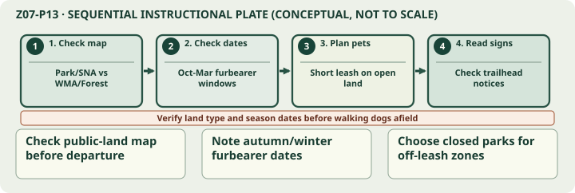

Z07-P13 · Traps and snares · New manuscript
Recognizing Open-Season Multi-Use Trapping Lands Before Hiking
Plan autumn and winter hikes and dog walks by checking whether public trails cross open furbearer trapping zones.
When it applies · Pre-trip planning on Minnesota public lands from October through March.
Equipment · MN DNR Recreation Compass/public-land map, current trapping season dates.

Actions
- Check whether your planned trail passes through State Forests, National Forests, WMAs, or county lands where lawful trapping occurs during autumn and winter seasons.[L01, L07, L10]
- Use dedicated fenced off-leash dog parks or verified park areas where trapping is prohibited when exercising dogs off-leash during open furbearer seasons.[L07, L10]
- Read trailhead bulletin boards and posted land-boundary signs every visit because temporary wildlife-management closures and seasonal rules change.[L01, L07]
Failure recognition · Assuming all public green space is a trapping-free city park leads to unexpected encounters on WMAs and State Forests.[L07, L10]
Verify · Land type, current seasonal dates, and pet-control plan are verified before leaving the trailhead.[L01, L07, L10]
Stop or change course · Stop unleashing pets if land ownership or current furbearer season status has not been confirmed.[L07, L10]
Evidence and editorial notes
- L01 · Minnesota DNR · Minnesota Trapping Regulations and Fur Harvest Rules (Current web edition)
- Section: Minnesota trapping licensing, seasons, and statutory limits · Conditions: Any regulated trapping activity or legal reference in Minnesota
Support: Trapping is strictly regulated by license, season, species, trap type, set location, check intervals, and landowner permission; unauthorized trapping is illegal.
Limitations: Emergency narratives never create an exemption to set traps or snares; verify current statute and DNR handbook every season. · Conflicting evidence: None noted.
Editorial note: Primary Z07 legal boundary. · Specialist reviewer: Wildlife law and DNR enforcement reviewer
Primary source · checked 2026-11-25 - L07 · Minnesota DNR · Minnesota State Park Rules and Resource Collecting Restrictions (Current web edition)
- Section: Public park, trail, and recreation-area trapping prohibitions · Conditions: Minnesota State Parks, campgrounds, and restricted public trails
Support: Trapping is generally prohibited in Minnesota State Parks, SNAs, and designated high-use public recreation corridors.
Limitations: Public multiple-use forests and WMAs may permit lawful seasonal trapping; leash pets and check posted notices. · Conflicting evidence: None noted.
Editorial note: Clarifies where bystanders/pets may encounter lawful sets. · Specialist reviewer: Public-lands manager
Primary source · checked 2026-11-25 - L10 · Minnesota DNR · Minnesota Trapping Regulations and Fur Harvest Rules (Current web edition)
- Section: Human and pet hazard recognition around lawful trapping areas · Conditions: Walking dogs or hiking in open public-use lands during furbearer seasons
Support: Keep dogs on short leashes on open multi-use lands during autumn/winter trapping seasons, avoid bait piles and shoreline culverts, and carry vet contact info.
Limitations: Body-gripping and cable devices present rapid fatal risk to unleashed pets; prevention via leashing is far safer than emergency release. · Conflicting evidence: None noted.
Editorial note: Core Z07 bystander & pet hazard prevention. · Specialist reviewer: Veterinary and outdoor-safety reviewer
Primary source · checked 2026-11-25
Source lineage · New manuscript (Z07 P18 encounter avoidance) · Classification · New manuscript.